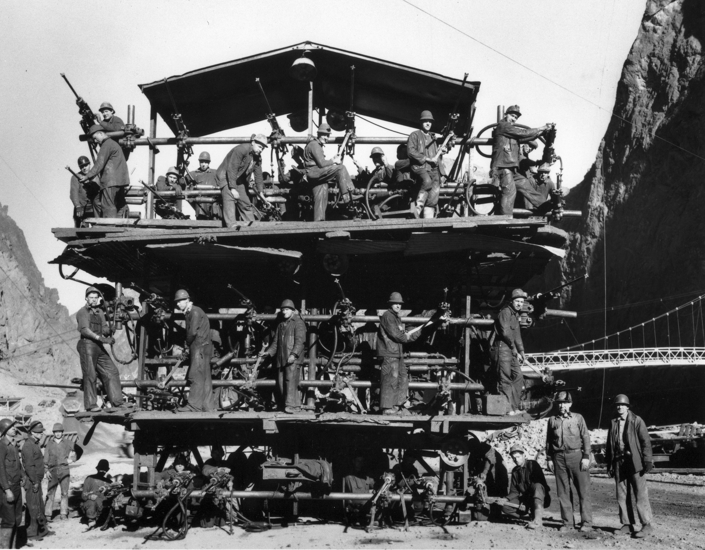

How Teams Made 20th Century Hydropower Work
The success of hydropower in the 20th century wasn't just about engineering - it was about people working together. Projects like the Hoover Dam and the Tennessee Valley Authority (TVA) were too big and too complicated for any one person or discipline to handle alone. What made them work was teamwork, and looking back at how these projects were organized and executed, you can see the same attributes of a high-functioning team show up over and over again.

Everyone Had a Role
One of the most basic things a good team does is make sure the right people are doing the right jobs. Hydropower engineering projects require large teams with all kinds of skills - geologists, hydrologists, dam engineers, surge shaft engineers, electricians, each fulfilling a specific role within the overall project. This wasn't just convenient. It was necessary. A geologist can tell you whether the ground is stable enough to build on. A hydrologist can model how water will flow through a dam. An electrical engineer designs the system that actually produces power. None of them can do each other's jobs, but together they build something none of them could on their own.
That's the foundation of any effective team: not that everyone knows everything, but that everyone knows their part and executes it well.
A Shared Goal Keeps Everyone Aligned
The TVA is one of the best examples of what happens when a massive team rallies around a common mission. At its peak, a dozen hydroelectric projects were under construction simultaneously, with design and construction employment reaching 28,000 workers. Coordinating that many people across that many projects required everyone to understand what they were working toward and why.
What made it harder - and more impressive - is that the TVA's goals were actually in tension with each other. Flood control requires empty reservoirs, hydropower generation needs full ones, and navigation requires stable, consistent flow rates. These aren't easy to balance. But the teams working on these projects figured it out. Before the TVA, dams were engineered for either electricity generation or flood control - never both. The TVA addressed both needs within a single dam, which soon became the global standard. That kind of breakthrough doesn't come from one person. It comes from a team that's communicating well enough to solve a problem that crosses multiple disciplines.
Communication Was Non-Negotiable
Good teamwork requires good communication, especially when the people on your team come from different backgrounds. Working on hydropower projects means collaborating with engineers, environmental specialists, and construction teams - which requires being able to convey technical ideas clearly and adapt your communication depending on who you're talking to.
On a dam project, a miscommunication between a structural engineer and a geology team isn't just a mistake - it's potentially a disaster. The teams that succeeded built clear communication structures so that everyone stayed informed. The results speak for themselves. The Hoover Dam, for example, was delivered two years ahead of schedule and within its original budgeted construction cost - which, for a project of that scale, is remarkable. That doesn't happen without tight coordination at every level.
Accountability Kept Things Moving
Another thing high-functioning teams do well is hold each other accountable. On a hydropower project, every team's work feeds into the next one. If the excavation team falls behind, it delays the concrete crew. If the concrete crew cuts corners, it creates problems for the mechanical engineers installing the turbines. Everyone's work is connected, which creates a natural culture of accountability.
Over the course of the 20th century, the shift toward team-based work - where a group handles a chunk of the overall task together, develops overlapping skills, and checks each other's work - was found to have a positive impact on quality and motivation compared to isolated individual work. Hydropower construction was a direct example of this. Workers and engineers alike understood that their individual performance had real consequences for the people working alongside them.
Teams Had to Adapt
Finally, these projects demanded adaptability. Nothing went exactly as planned. Geological surveys revealed unexpected conditions. Political climates shifted. Budgets got complicated. Because of the complexity, variability, and uncertainty involved in hydropower engineering, project teams increasingly relied on collaboration networks that allowed them to share risks, information, and resources.
The teams that handled this well were the ones that had already built trust and communication into their process. When something changed, they didn't freeze or fall apart - they adjusted together. That flexibility is a direct outcome of the teamwork habits they had developed throughout the project.